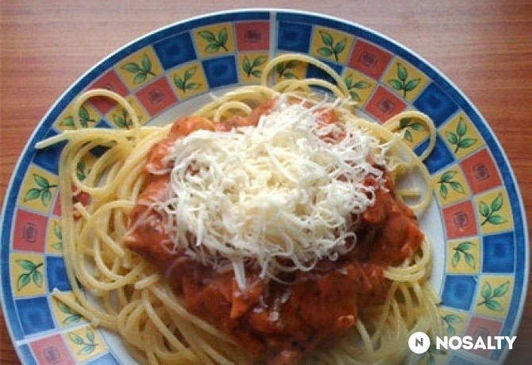

Milánói spagetti
Vissza
Forrás

Story
Egy evőkanál tejföl hozzáadásával (elkészülés előtt) még "meg lehet bolondítani" a ragut.
Hozzávalók
- 2 ek olívaolaj
- 1 közepes fej vöröshagyma
- 4 gerezd fokhagyma
- 500 g sűrített paradicsom
- 300 g sonka
- 150 g gomba
- só ízlés szerint
- 0.5 ek bors
- 1.5 ek oregánó
- 1 ek bazsalikom
- 1 ek cukor (kristály)
- 500 g spagetti tészta
- 1.5 ek só
- 0.5 dl napraforgó olaj
- 15 dkg trappista sajt (reszelt)
- 1 szál oregánó (friss)
Elkészítés
- Egy nagy edényben felteszünk vizet forrni.
- Míg a víz felforr, összevágjuk a hozzávalókat: nagyon apróra a hagymát és a fokhagymát, kis kockákra (kb 1x1 cm) a sonkát (ezért egybe kérjük a boltban, ne szeletelve), és cikkekre a gombát.
- Kevés olívaolajon megpároljuk a hagymákat, rátesszük a gombát (párolás közben a gomba veszíteni fog nagyságából, melyet a szeleteléskor vegyünk figyelembe) majd nem sokkal később a sonkát is.
- Öntsük fel a paradicsom-sűrítménnyel, fűszerezzük ízlés szerint (a javasolt fűszer mennyiségek a paradicsom sűrítmény összetétele miatt eltérő lehet, ezért gyakran kóstoljuk a ragut).
- Amikor a víz felforrt, sózzuk annyira, hogy tengervíz sós legyen. Újraforrás után tegyük bele a tésztát (ne törjük el!), és keverjük meg, hogy minél hamarabb ellepje a víz. Főzzük ¾ puhára, mely lépés az olasz tészták esetén nagyon fontos.
- Amennyiben nem fogyasztjuk azonnal, a tésztát bő, hideg vízben hűtsük le teljesen, kevés étolajjal locsoljuk meg, és így tároljuk fogyasztásig.
- Reszelt trappista sajttal szórjuk meg étkezés előtt a tésztára tálalt ragut, esetleg friss oregánólevéllel díszítsük!
- Jó étvágyat!
Statisztika
| Beküldve: |
2009.11.06 |
| Tegnapi nézettség: |
118 |
| Össznézettség: |
228 178 |
| Elküldve: |
13 |
| Receptkönyben: |
685 |
| Elkészítve: |
34/41 |
| Facebookon megjelent: |
- |